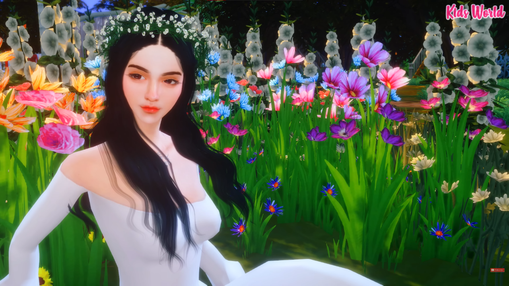
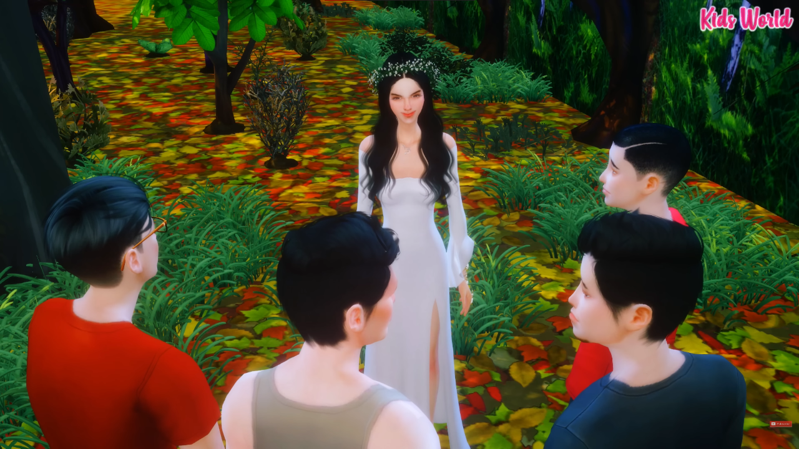
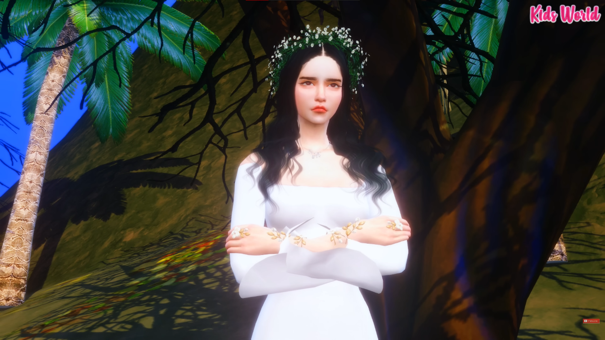

The Beginning
Sa Bundok ng Arayat sa Pampanga nakatira ang isang engkantada. Kilala siya doon bilang Mariang Sinukuan.
Magandang-maganda si Maria. Matangkad siya at kaakit-akit kung pagmamasdan mula ulo hanggang paa. Kapansin-pansin ang tamis ng kaniyang ngiti. Mapapatingin ka kapag nagsalita na siya sapagka't hindi mo maipaliwanag kung anong misteryo ang bumabalot sa katauhan niya. Natural lang kasi na ituring siyang isang diyosa sapagka't engkantada nga ang dalaga.
Pero kahit na engkantada, tuwang-tuwa siya sa mga taong kaniyang nakikita. Natutuwa siya kapag magmamano ang mga bata sa mga nakatatanda. Nasisiyahan siya kapag hinahainan ng maybahay ang pagod na asawa. Naliligayahan siya kapag nakikitang nagpapawis ang mga ama sa pagsasaka may mauwi lang na aning palay sa asawa at mga anak nila.
Sapagka't may angking kabaitan, lagi at laging tumutulong si Maria sa mga tao sa paligid ng kabundukan.
Hinahandugan niya lagi ng mga sariwang bungang kahoy ang bawat pamilya. Noong una takang-taka ang mga mag-anak. Paano nga raw bang nagkakaroon ng mga sariwang prutas sa kani-kanilang hagdan gayong wala namang sinumang dito ay naglalagay. Hindi alam ng mga tao na sa isang kisapmata ay nailalagay kaagad ni Maria ang handog sa bawa't hagdang tunguhin niya.
Upang hindi naman maging kababalaghang walang kapaliwanagan, may mga pagkakataong nagpapakita si Mariang Sinukuan sa mga maybahay na siyang pinagbibigyan niya ng mga buwig ng mga matatamis na saging, bungkos ng matatabang kamoteng kahoy at pumpon ng mababangong rosal. Pagkabigay na pagkabigay ay ngingiti lang si Maria at magpapaalam na. Hindi na siya nakikipagkwentuhan pa. Gustung-gustong nakikita ni Mariang kaagad ihahain ng mga maybahay sa kani-kanilang pamilya ang handog ng kalikasang dala-dala niya.
Sa bawat hagdan ay iba ang inilalagay niya. May lansones, papaya at makopa. May ilang-ilang, ehampaea at kamya. May mabolo, balimbing at mangga. May rambutan, litsiyas at ehesa pa. May malunggay din, repolyo at kalabasa. May upo na, may ampalaya pa at saka patola. Ang bawat mag-anak na dalawin ay natutuwa sa kanya. Kaya kahit hindi nakikita si Maria ng lahat ay nagpapasalamat sa engkantada.
Sa pagkakaroon ng sapat na pagkain, matanda at bata man ay may malulusog na pangangatawan. Nilalayo sila sa pagkakaramdam. Upang ipakita ang taos pusong pasasalamat, nangako ang lahat na hindi sila aakyat sa bundok ni Mariang Sinukuan. Ipinangako rin nilang hindi sila huhuli ng anumang hayop, mamimitas ng anumang bulaklak o manunungkit ng anumang bungang kahoy, kukuha ng gulay sa itaas man o paanan ng kabundukan. Nagkakaintindihan si Mariang Sinukuan at ang mga mamamayan.

The Middle
Ngunit may mga bagong sibol na kabataang isinisilang at may mga magagandang pananaw na natatalo ng sakim na paninindigan. Dumating nga ang panahon na naging makasarili ang ilan. May nagpapawalang halaga sa pagiging engkantada ni Maria. Ang hayop at halaman daw ay para sa sangkatauhan kaya dapat akyatin ang kabundukan at huwag paniwalaan ang pagiging engkantada ni Mariang Sinukuan.
Isang grupo ang nangahas na umakyat sa bundok. Pinatotohanan ng mga nakita nilang hayop at halaman na ang lugar ay isa nga palang paraiso ng kalikasan.
Habang pinagsasaluhan ang napakaraming napitas na ehiko, lansones at sinigwelas ay natanawan nila ang isang papalapit na dalaga na kahit na nakayapak ay pagkaganda-ganda. Hindi sila kaagad nakapagsalita nang mapansin nilang may kung anong liwanag ang nakapalibot sa nakaputing engkantada na sa isang kisapmata ay tinitingala na nila.
"Ako si Maria ng Bundok Sinukuan," pagpapakilala ng dalaga na kapansin-pansing nakaangat ang mga paa habang nagsasalita siya.
"Ma...Maria ng Bundok Sinukuan? Ka...kayo ba ang nagbibigay ng mga gulay, bungang kahoy at bulaklak sa bawat bahay-bahay?"
Ngumiti lamang ang engkantada at nagpaalala, "Makakain ninyo ang lahat ng bungang kahoy subalit wala kayong dadalhing anuman sa inyong pagbaba sa kabundukan."
Tumangu-tango lang ang kalalakihan. Napatunayan ng lahat na totoong mapagbigay si Maria nang anyayahan sila sa isang masaganang pananghalian.
Sapagkat noon lamang may dumalaw sa Bundok ng Sinukuan ay pinagsikapan ni Mariang pakitunguhan ang kalalakihan. Ginulat ni Maria ang mga bisita nang dalhin sila sa mesang kainan sa ilalim ng punong mangga. Isang masaganang pananghalian ang bumulaga sa kanila. May mga inihaw na baboy-damo, pabo at usa. May umuusok pang kanin sa mga dahon ng saging. May suha at guyabano at mabolo. Mayroong duhat, saging at balimbing. May malamig na tuba ring nakahain. Tiyak na maiibigan ng pinakapihikan man ang inihandang pagkain ni Mariang Sinukuan.
Hindi pa man pinadudulog ay nagsiupo na at nangagsikain ang mga panauhin. Matapos mabundat ay hindi man lang sila nagsipagpasalamat sa nag-imbitang engkantadang nagpakatao bilang pagbibigay sa kanila.
Nang pumanhik na si Maria sa ituktok ng bundok ay nag-usap-usap ang mga gahaman.
"Nagpapahinga na si Maria sa tirahan niya," sabi ng isa, "ilabas na ninyo ang mga sako ninyo."
Inilabas ng lahat ang mga sakong dala nila at may ilang nagsiakyat sa mga puno ng lansones, rambutan at papaya. May nanghabol ng nagtatabaang manok, gansa at pabo. Ang iba naman ay kumuha ng mga sariwang kalabasa, repolyo at kundol. Lahat ng sako ay napuno. Lahat ay tuwang-tuwa. Naisahan nila si Mariang Sinukuan. Kahit alam nilang pagnanakaw ang ginawa nila ay di man lang sila nahiya sa mga sarili.
Hindi nila alam na nagmamasid lang sa ituktok ng bundok ang engkantada. Hindi nila inalintana ang pakiusap ni Maria. Para kay Maria, ang kaniyang mga salita ay dapat na igalang bilang batas ng Diyosa ng kalikasan.
Nang bababa na ang mga mapagsamantala ay nagtataka sila. Damang-dama nila na sa bawat hakbang na pababa sa kabundukan ay lalong bumibigat ang mga sakong kanilang pasan-pasan. Nang hindi na sila makahakbang sa bigat ay napilitan silang buksan ang mga sakong pasan. Nagulat sila nang makitang ang mga gulay, bungang kahoy at hayop na dala-dala ay naging mga batong bundok. Nang matingala sila sa tuktok ay nakita nilang galit na galit si Maria sa pagnanakaw na ginawa nila.
"Mga pangahas!" sigaw ng engkantada na ang tinig ay sinlakas ng kulog.
Nang ituro ng engkantada ang mga magnanakaw ay naging baboy-damo silang di malaman kung tatakbo nang pababa o paitaas ng kabundukan.

The End
Kahit hindi na nakabalik pa sa kani-kanilang tahanan ang pangahas na kalalakihan ay hindi pa rin nadala ang ilang mapagsamantalang naninirahan sa paligid ng kabundukan. Kung hindi pagnanakaw ay paninira sa kalikasan ang krimeng isinasagawa ng maraming mamamayan.
Dumating sa puntong nawala ang pagtitiwala ni Mariang Sinukuan. Sa sobra niyang pagbibigay ay nagsasamantala ang marami sa kabutihan at pagkalinga ni Maria.
"Hindi ako susuko sa kapangahasan nila!"
Bilang parusa, itinigil na ni Maria ang bigay pala niyang paghahandog araw-araw ng mga bungang kahoy mula sa kabundukan.
Napansin ng mga taong nagtampo na sa kanila ang engkantada. Nag-usap-usap sila. Sinuri nila ang mga kahinaan nila. Natunton nilang dahil sa kapangahasan at pagwawalang halaga sa kayamanan ng kabundukan ay nagalit at umakyat na sa tuktok ng bundok niya si Maria.
Ayon sa sabi-sabi, kahit nagsisuko na ang mga pangahas ay hindi na rin bumaba ng kabundukan si Mariang Sinukuan.
Iyan ang pinagmulan ng nagtampong Engkantada sa Bundok Sinukuan.
Iyan ang alamat ni Mariang Sinukuan.
STORY CREDITS: PINOY EDITION